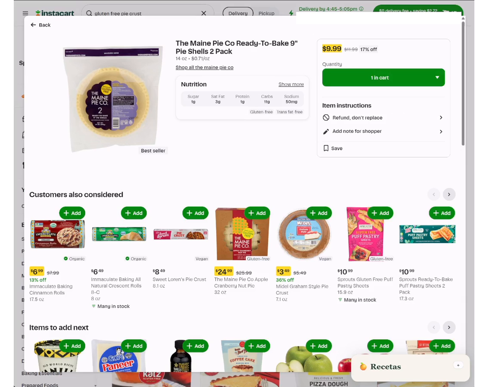

recetas09 / 15
The agent also adds the weekly extras
The recipes are only part of the basket. Ask for fruit, milk and other household groceries too.
The agent adds bananas, berries, gluten-free pie crusts, organic half-and-half and Ripple milk.
Recipe ingredients and everyday extras go into the same family cart.
